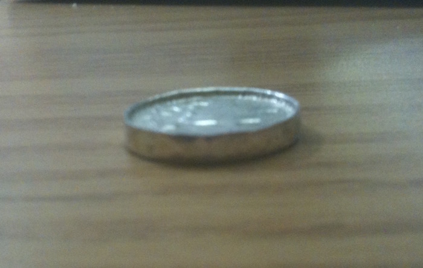

Coin Ring
Another small project I did at the start of college. I've heard many times of people making rings out of coins, so I wanted to try it for myself.
The silver quarter used in this project. Quarters made in the year 1964 or before are made of a decently high-purity silver and make a distinctly different sound when dropped.
After a week of hammering the coin edge with a spoon. The edge is starting to bend over and shape up!
A poorly focused side profile. The coin was hammered with a spoon because using a hammer frequently applied too much force and would cause the coin to warp, resulting in a wobbly ring.
After hammering the coin edges to size, I started drilling out the center of the coin. I turned a bowl upside down to hold water to cool the ring during the drilling.
The finished product, after polishing! The words on the edges of the coin were preserved on the interior of the ring. Looks good and fits well - it produced a ring of about size 6.5.